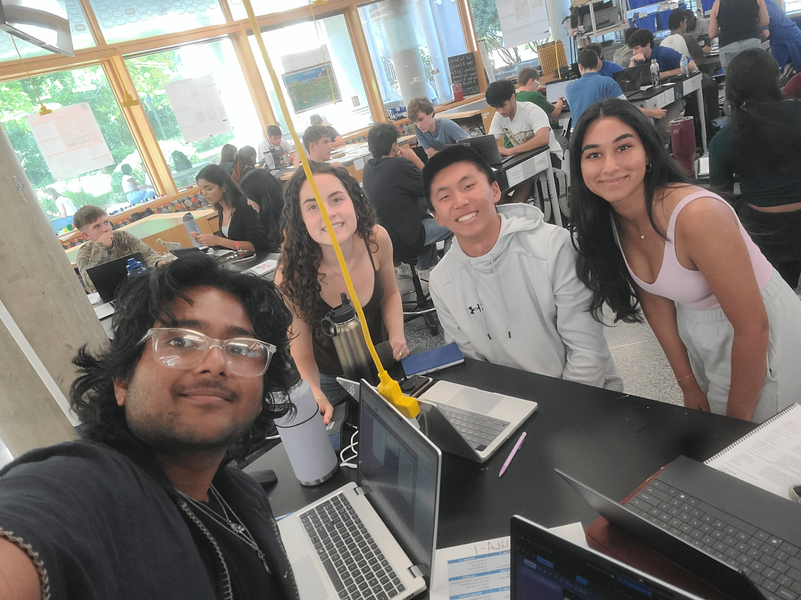
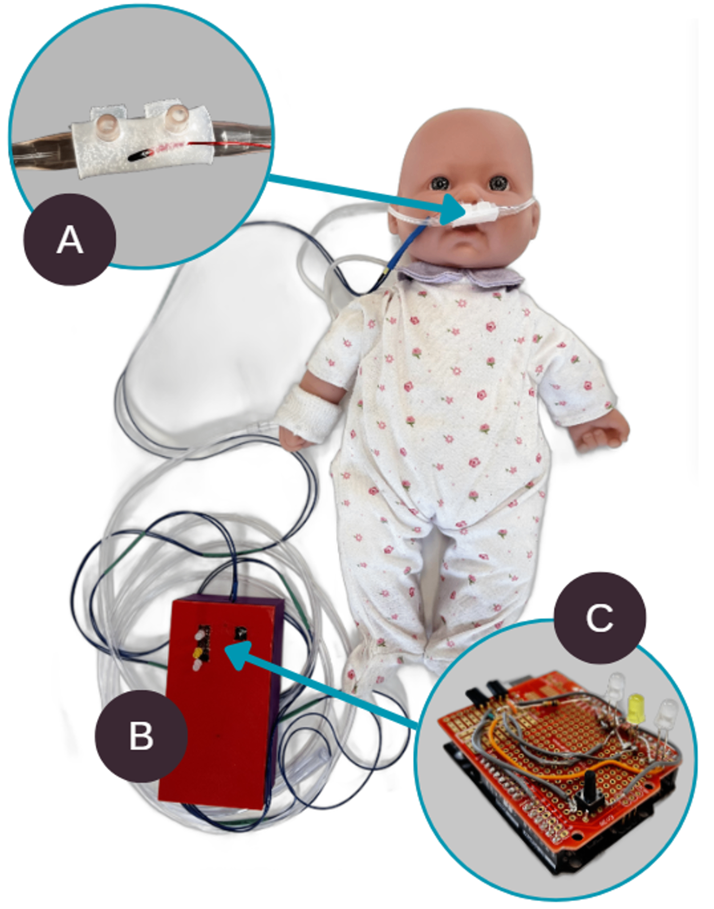
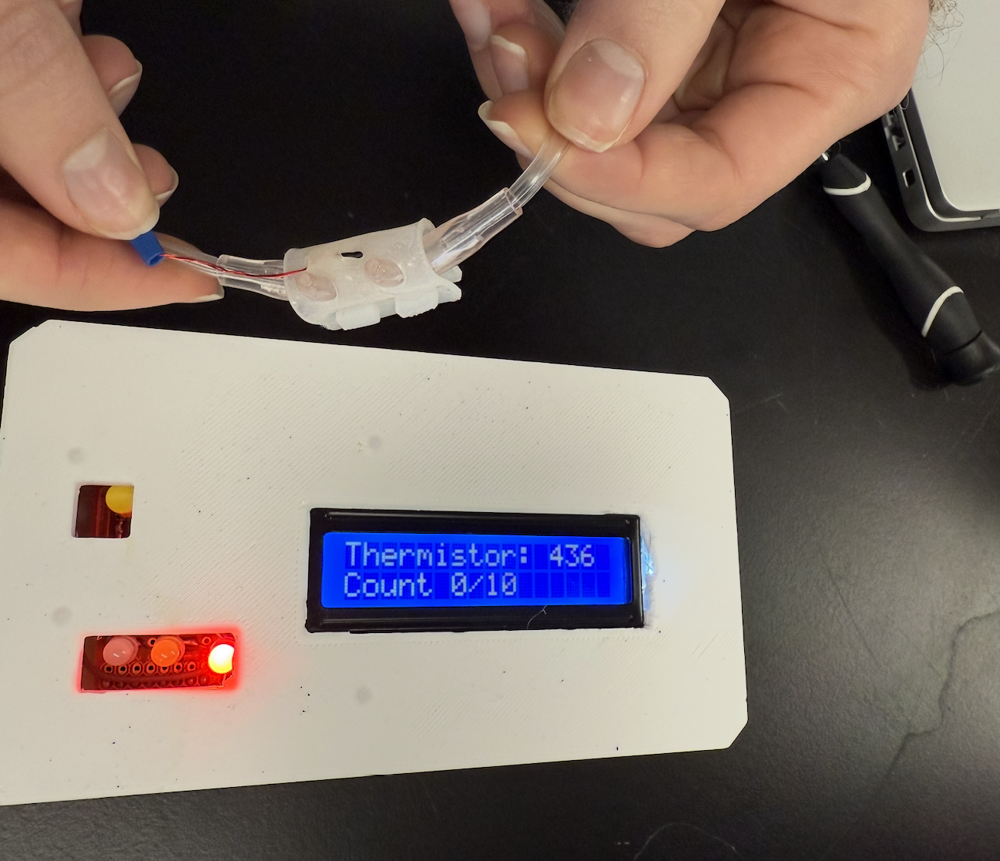

Selected Projects and Coursework.
About Me
Hello! I'm Felix Wang. I am a passionate creator focused on building devices and electronics that can positively help improve our world. My current interests are in the intersection between sustainability and hardware electronics. In my free time, I love to play pickleball and do stargazing!
Education
-
Duke University — B.S.E. in Electrical & Computer Engineering, B.S. Physics (Exp. May 2028)
Honors: Duke Motorsports, Club Swimming. Coursework: Energy & Climate Entrepreneurship, Data Structures. -
Adlai E. Stevenson High School — Summa Cum Laude (Aug 2020 - May 2024)
GPA: 4.85/4.00 | SAT: 1560 | Honors: USAPHO Qualifier, USACO Gold, National Merit Semifinalist.
Experience
-
Northwestern University (CIERA) — Researcher (Jun 2025 - Jul 2025)
Applied AstroPy, HEALPix, and LightKurve for astrophysical data analysis. Processed 10,000+ planetary candidates. -
Stellarverse — Founder & Head of Operations (May 2022 - Present)
Managed a non-profit hosting astronomy sessions. Raised $2500 and built digital infrastructure with Stripe integration. -
Patriot Aquatics Club — Swim Instructor Lead (May 2021 - Jul 2025)
Trained 50+ instructors, oversaw lesson plans, and organized 120+ customized private swim lessons.
Leadership & Research
-
Duke Motorsports — Electrical Team (Aug 2025 - Present)
Designed 3 kW motor controller improving efficiency by 6%. Built photogate timing system using laser sensors. -
Duke Engineers for International Development — Project Member (Aug 2025 - Present)
Designed $30 monitoring system via Arduino to alert nurses of infant nasal cannula dislodgement in Uganda. -
Gabrielse Group, Northwestern Univ. — Researcher (Jun 2024 - Jul 2024)
Constructed photogates/beam shapers for UV laser systems optimizing particle detection.
Projects & Skills
-
Mycospec — Lead Electrical Engineer (Dec 2025 - Present)
Building handheld fungal detector linked with ESP32 sensors and ML models via React/Node.js app. -
HiFive — Full-Stack Developer (Mar 2025 - Present)
Real-time messaging app with Node.js/Socket.IO and Postgres. Designed LLM pipeline for context-aware icebreakers. -
Skills & Interests
Mandarin, Java, Python, Arduino, Circuit Analysis. Interests: Butterfly Swimming, Climate Tech/Space, Podcasting.
Nasal Cannula Detection Device
Healthcare & Embedded SystemsThe Problem
Infant mortality rates in low-resource settings, such as Mulago National Referral Hospital in Uganda, are significantly impacted by nasal cannula dislodgement. With nurse-to-baby ratios up to 1:35, continuous monitoring is exceptionally difficult.

The Solution & Key Components
We designed a low-cost (<$5) Arduino-based monitoring and alert system that detects dislodgement natively and rapidly alerts healthcare providers to prevent hypoxia.


- Sensor: Embedded thermistor monitors skin temperature every 500ms.
- Alarm Box: 3D printed housing containing circuitry, battery, and alarming mechanisms.
- Circuitry: Activates an alarm if readings stay below a calibration threshold for 10 counts. Features 3 integrated LEDs: Green (Power), Yellow (Calibration), and Red (Dislodgement).
Testing & Results
- Integration: Seamless setup taking <5 mins. (Average attachment: 21.86s).
- Response Time: Alerts triggered within 1-3 minutes. (Average response: 17.29s).
- Accuracy: 100% true positives across 60 clinical trials.
- Reusability: Disassembled 50+ times with zero structural wear.
Exoplanet Detection & Habitable Zone Analysis
Astrophysics & Data Science ResearchThis research strictly explores exoplanet detection using transit photometry from the TESS telescope, streamlining the process of importing MAST catalog time series data over to light curves to evaluate long-term habitability conditions.
Methodology
- Transit Photometry: Detecting astronomical brightness dips during planetary transits.
- Light Curve Analysis: Leveraged the
LightkurvePython library to reliably process and normalize TESS pixel files. - Periodogram Analysis: Applied the Box Least Squares (BLS) algorithmic method for identifying exact orbital periods.
- Habitable Zone Calculation: Computed via stellar mass-luminosity relationships utilizing
Astropy. - False Positive Detection: Filtered dynamically utilizing Centroid tracking, background flux analysis, and eclipsing binary mapping.
Key Findings
- Deeply analyzed exactly 2,537 documented exoplanets and concluded that only 118 (4.7%) lie within viable habitable zones.
- Observed an overarching physical trend of discovered exoplanets orbiting extremely close to their host stars.
- Successfully identified the entity
TIC 34798133as a highly promising candidate for further deep-space telescope review.
Full Research Paper
← Back to ProjectsFOAK Fungal-Detection Device (MycoSpec)
Medical Hardware & Embedded DiagnosticsThe Invisible Threat
HVAC systems create warm, humid, low-light environments—ideal conditions for fungal proliferation. For immunocompromised patients (e.g., post-transplant or chemotherapy patients), inhaled Aspergillus spores can cause invasive aspergillosis, a life-threatening pulmonary infection with mortality rates exceeding 50%.
The Device (How It Works)
MycoSpec is a compact, clip-on sensor module engineered to mount directly on standard HVAC vent fins—requiring no tools or disruption to operations. It constantly polls volatile organic compounds (VOCs), ambient temperature, and humidity to provide real-time mold risk assessments before visible growth ever appears.
Testing & Results
- Controlled experiments conducted in lab facilities simultaneously logged sensor readings for over ~350 seconds alongside active Aspergillus fumigatus cultures.
- Identified distinct bands of VOC detection between the negative control (no mold) and the positive clinical control.
- These thresholds formed an algorithmic classification boundary for LOW / MEDIUM / HIGH risk indicators output to a live dashboard.
Technical Challenges Overcome
Building a reliable mold detection system required overcoming fundamental real-world hurdles:
- Sensor Specificity: Filtering out real-world noise (cleaning agents, occupant activity, off-gassing materials) from ambient VOC logs to prevent false alarms.
- Mold Species Differentiation: Translating characteristic mixes of sesquiterpenes and alcohols from specific species like Aspergillus vs. Stachybotrys.